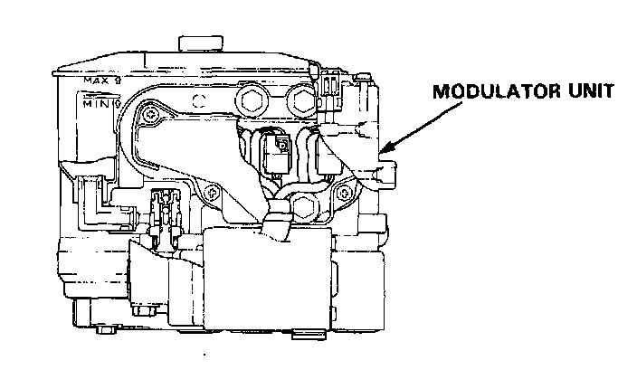

Hydraulic Assembly

Modulator Unit
The modulator unit consists of the following sub-units. It adjusts the hydraulic pressure applied to each caliper on the basis of the signals received from the ABS control unit.
- ABS pump and motor: Supplies high-pressure brake fluid to control the ABS operation.
- Accumulator: Stores the high-pressure brake fluid.
- Pressure switch: Detects the pressure in the accumulator and transmits signals to the ABS control unit.
- Solenoid valves: Switches the ABS high-pressure passage according to the signals from the ABS control unit.
- Pistons and related parts: Receives the high-pressure brake fluid, and controls pressure to the calipers accordingly.